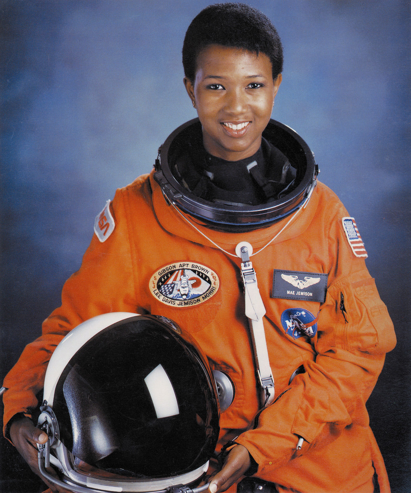
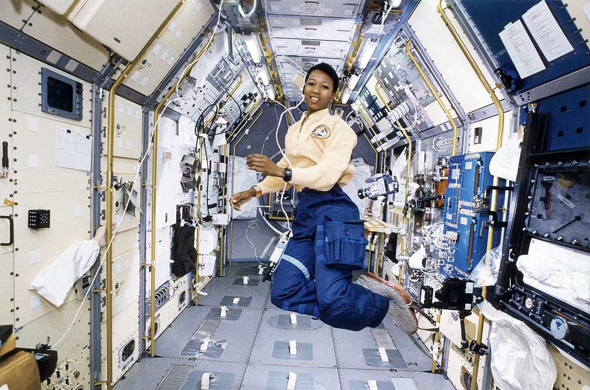

Mae Carol Jemison (Decatur, 17 de outubro de 1956) é uma médica, engenheira e ex-astronauta estadunidense. Foi a primeira mulher negra a ir para o espaço, quando serviu como especialista de missão a bordo do ônibus espacial Endeavour. Jemison se uniu ao grupo de astronautas da NASA de 1987 e serviu na missão STS-47, na qual orbitou a Terra dos dias 12 a 20 de setembro de 1992.
Quando Mae Carol Jemison nasceu, a NASA não permitia que mulheres fossem astronautas. Mulheres negras, como era o caso de Jemison, então, nem se fala. Mas isso não impediu que ela, crescendo em Chicago, sonhasse com ir para o espaço: determinada, ela se formou em Engenharia Química na Universidade Stanford e, depois, em Medicina na Universidade Cornell
Em 4 de junho de 1987, Mae Jemison se tornou a primeira mulher afro-americana a ser admitida no programa de treinamento de astronautas da NASA e, em 1992, foi a primeira mulher afro-americana a viajar para o espaço. Ela viajou a bordo do ônibus espacial Endeavour, na missão STS-47 e, durante os oito dias em que esteve no espaço, Mae Jemison conduziu experimentos sobre falta de peso e enjoo de movimento na tripulação e em si mesma, totalizando 190 horas no espaço.
Depois de servir na NASA, de 1987 a 1993, Jemison fundou o Jemison Group, Inc., que desenvolveu o ALAFIYA, um sistema de telecomunicações por satélite. O objetivo deste sistema era melhorar os cuidados médicos nos países em desenvolvimento.
Foi professora no programa de estudos ambientais da Universidade de Dartmouth, onde dirigiu o Instituto Jemison para o avanço tecnológico nos países em desenvolvimento. Entre seus projetos atuais, há vários que se concentram na melhoria da saúde na África e no avanço das tecnologias nos países em desenvolvimento.
Também foi professora no programa de estudos ambientais da Universidade de Dartmouth, onde dirigiu o Instituto Jemison para o avanço tecnológico nos países em desenvolvimento. Entre seus projetos atuais, há vários que se concentram na melhoria da saúde na África e no avanço das tecnologias nos países em desenvolvimento.
Jemison foi professora na Cornell University e no Dartmouth College, de 1995 a 2002. Ela participa de várias organizações científicas como a American Medical Association, a American Chemical Society, a Association for Space Explorers e a American Association for the Advancement of Science.
